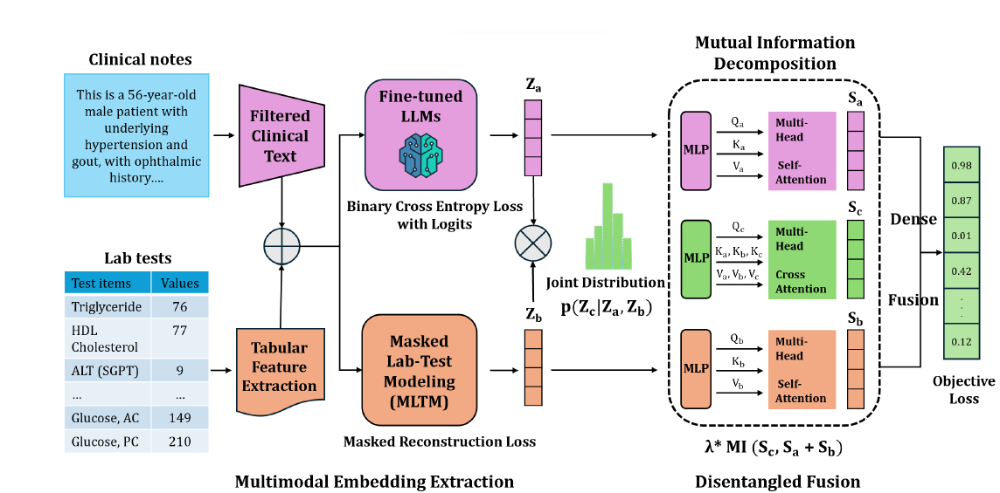

|
Shun Liu Email: shunliu [at] buffalo [dot] edu I'm in the final year in the Department of Computer Science, Shanghai University of Finance and Economics. During the undergraduate study, I'm fortunate to intern and receive high-quality research mentorship at University at Buffalo, Dartmouth College, Zhejiang Lab, and Cardinal Operations. My previous work is about expert models for LLM-driven feature engineering (LLM4FE), multiple object detection (OD). I'm currently working on developing interpretable (foundational) models on:
|
{kind=link}
I'm actively seeking CS/BME PhD oppurtunities starting at 25 Fall!News[11/2024] Submitted one paper (first-author) to CVPR'25 on biomedical text-vision learning! [09/2024] Submitted one paper to ICLR'25 on biomedical VQA! [07/2024] One paper is accepted by CIKM'24, thanks for all collaborators! [07/2024] Starting as a full-time research assistant at University at Buffalo! [03/2024] Starting as a research intern at Cardinal Operations! [12/2023] Achieving Gold Medal (Top 1%) in CAFA5 Protein Function Prediction competition! [11/2023] Starting as a research assistant at Dartmouth College! [10/2023] Achieving Silver Medal (Top 2%) in LLM for Science Exam competition! |
|

|
MEDFuse: Multimodal EHR Data Fusion with Masked Lab-Test Modeling and Large Language Models
Nguyen Minh Thao Phan*, Cong-Tinh Dao*, Chenwei Wu, Jian-Zhe Wang, Shun Liu, Jun-En Ding, David Restrepo, Feng Liu, Fang-Ming Huang, Wen-Chih Peng‡ Accepted, CIKM'24(Short Research Paper Track) [arxiv] We propose MEDFuse, a Multimodal EHR Data Fusion framework that incorporates masked lab-test modeling and large language models (LLMs) to effectively integrate structured and unstructured medical data. MEDFuse leverages multimodal embeddings extracted from two sources: LLMs fine-tuned on free clinical text and masked tabular transformers trained on structured lab test results. |

|
MAIF: Model-Agnostic Interpretation Framework in Machine Learning: A Comparative Study in NBA Sports
Shun Liu, Jiaxi Yang‡ arxiv, 2024 [arxiv] We proposed an innovative framework designed to reconcile the trade-off between model performance and interpretability. Our approach is centered around modular operations on high-dimensional statistics, which enable end-to-end processing while preserving interpretability. By fusing diverse interpretability techniques and modularized data processing, our framework sheds light on the decision-making processes of complex models without compromising their performance. |

|
ADA-YOLO: Dynamic Fusion of YOLOv8 and Adaptive Heads for Precise Image Detection and Diagnosis
Shun Liu Jianan Zhang, Ruocheng Song, Teik Toe Teoh‡ arxiv, 2024 [arxiv] We proposed a deep detector which leverages the dynamic feature localisation and parallel regression for computer vision tasks through adaptive head module. Empirical experiments were conducted on the Blood Cell Count and Detection (BCCD) dataset to evaluate the effectiveness of ADA-YOLO. The results showed that ADA-YOLO outperforms the YOLOv8 model in mAP (mean average precision) on the BCCD dataset by using more than 3X less memory than YOLOv8. |